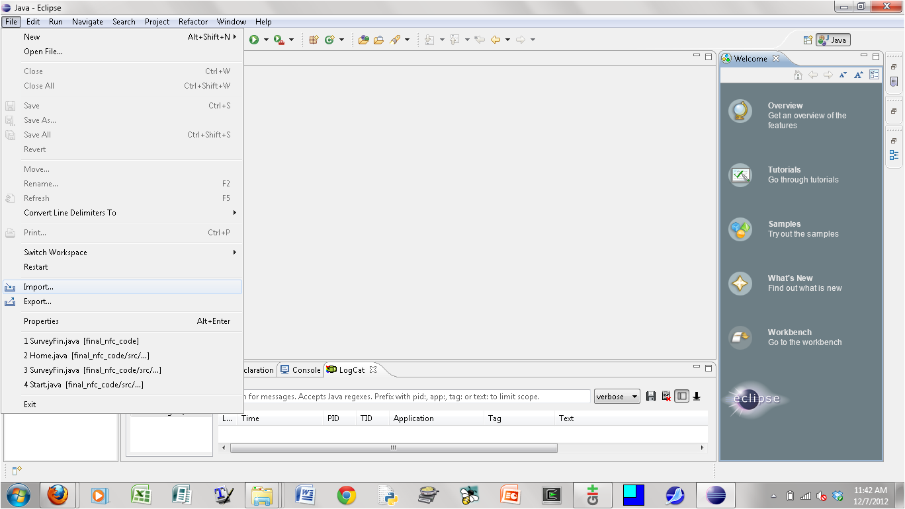
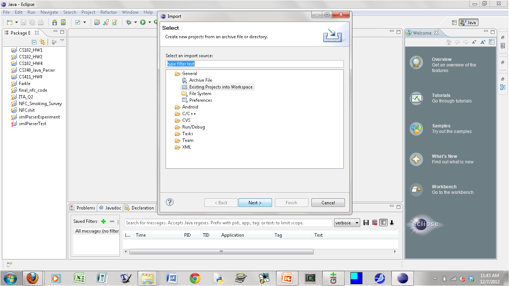
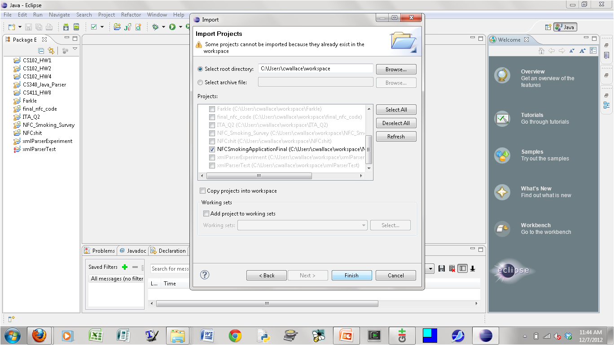
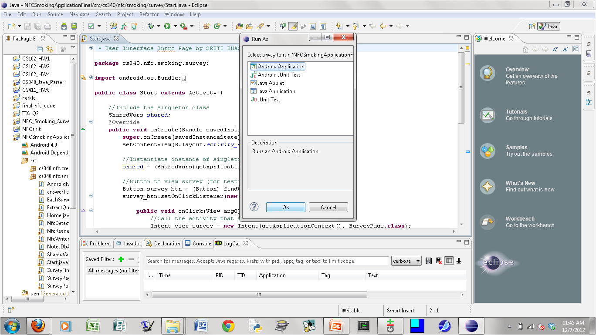
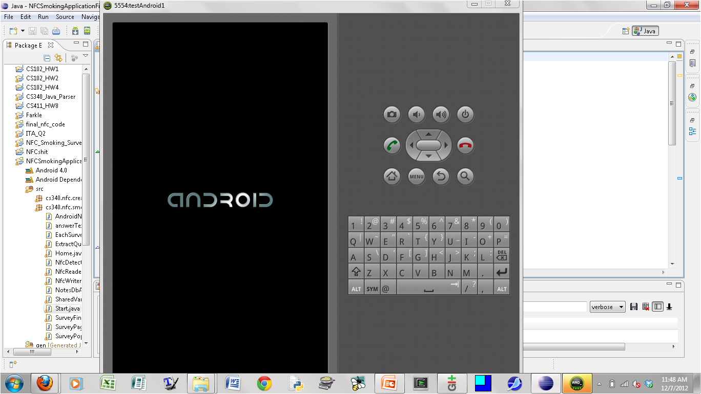
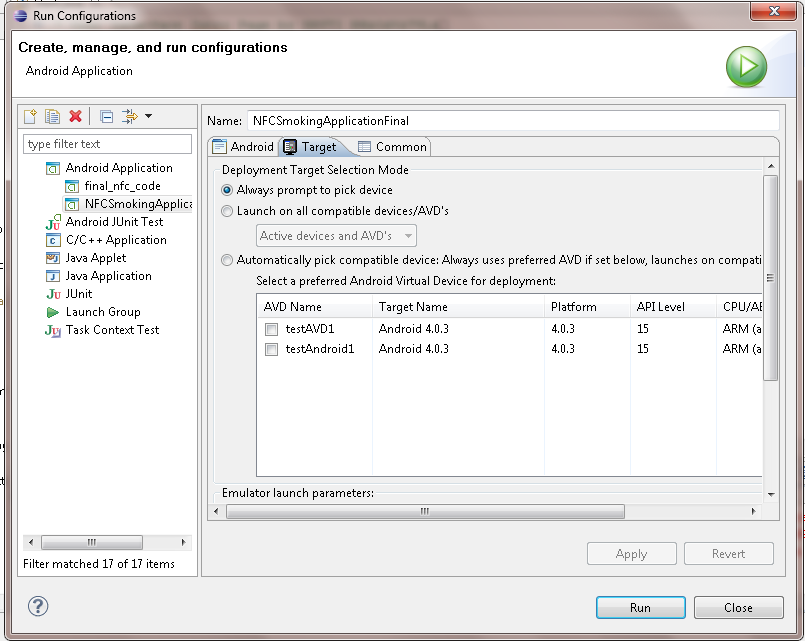
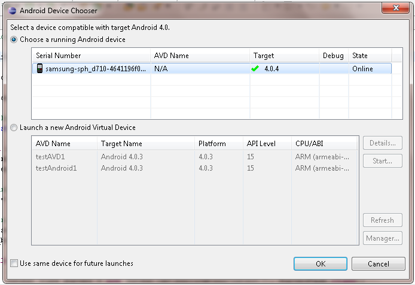
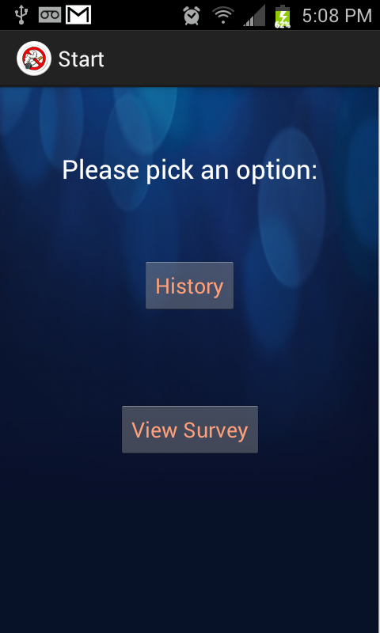

To run the survey application, you will need the following:
An appropriate version of the Eclipse IDE installed on your machine. The version of Eclipse needs to be compatible with Android Development Toolkit plug-in; our team found that the Helios version of Eclipse with JDK version1.6+ was sufficient. The emulator cannot imitate the NFC functionality of an actual phone, so the NFC tag activation cannot be demonstrated using the emulator.
[Optional] An Android phone onto which you can load the survey application. The phone should have at least Android 4.0.3 with API level 15+. Note that only some Android phones come equipped with the hardware needed to do the NFC tag sensing, but any Android phone with the minimum software requirements should be able to run the survey application alone. Our team mostly tested the application using the Samsung Galaxy SII phone.
Below are instructions for how to run the survey application using the Android emulator within the Eclipse Java IDE.
Import the project “NFCSmokingApplicationFinal” into your Eclipse workspace.



Run the project as an Android application.

The Android emulator should start. Note that it may take several minutes for the emulator to be fully up and running (depending on the characteristics of your computer and the configuration details of your Android Virtual Device). After you have unlocked the emulator phone screen, the survey application should automatically launch after a short delay (due to the slowness of the emulator).

Under “Run Configurations”, go to the Target tab and make sure the option “Always prompt to pick device” is checked. Connect the Android phone to the computer via USB cable. Wait for the computer to recognize that the phone has been connected. Then click “Run” in the “Run Configurations” window that is still open within Eclipse.

The Android Device Chooser window will open; select the Android device that is connected to the computer, and click OK to load the application to the phone.

Once the application has been successfully loaded onto the phone, you should see the start page of the survey application on the phone screen.
